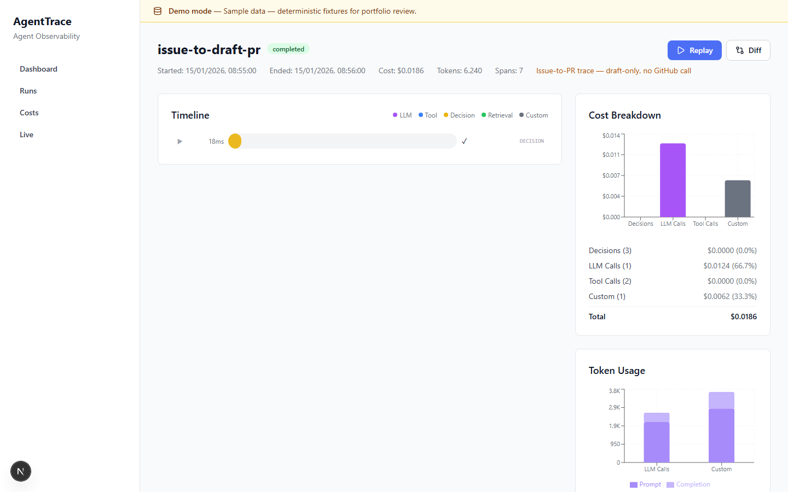

agenttrace
Tracing SDK, collector and dashboard that find the failing step across concurrent AI workflows, with cost attribution.
171 SDK + 124 collector + 41 dashboard tests; package and isolated-wheel checks; checksum-verified evidence. Provider answers, usage and prices in the demo are synthetic; live PostgreSQL/Redis is not verified.
Without post-hoc run inspection, agent failures stay opaque—you cannot attribute cost, replay decisions step by step, or debug what the model and tools actually did on a failed run.
Offline demo:
make demo-ui
Walkthrough


Why it matters
The default demonstration runs locally without credentials or hosted services. The absorbed issue/PR scenario proves path and branch refusals, test gating, explicit approval, draft-only intent, ordered audit events, and deterministic replay without contacting GitHub.
Verified proof
171 SDK + 124 collector + 41 dashboard tests; package and isolated-wheel checks; checksum-verified evidence. Provider answers, usage and prices in the demo are synthetic; live PostgreSQL/Redis is not verified.